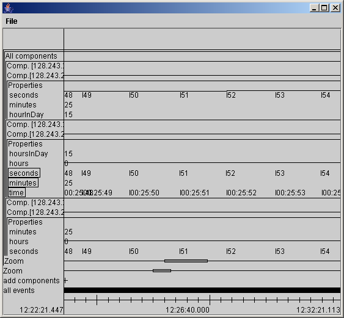

EQUIP Component Toolkit Timeview GUI Introduction
Chris Greenhalgh, 2004-06-04
Running
Run the component infrastructure first. E.g. for developers see how_to_add_a_new_component.html
Run the Timeview GUI, e.g. run the batch file runTimeview.bat in the
directory Equator/equip4j/infrastructure/install/
It should attach to the default or configured dataspace, and show a
window something like this...

The display
The display shows a stack of horizontal tracks. At the left is the
key/label for each track. Time is shown from left to right. The tracks
are typically (top to bottom):
- A group of tracks (shown by the line along the top and left of
the group) titled 'Components' for all of the Components currently
running. For each component there is:
- A title track
- A track showing the lifetime of the component (when it exists)
- A group of tracks titled 'Properties' comprising
- A track for each of the component's properties. This shows
changes in property value by a small vertical bar, and the value after
the change as text. For boolean and integer properties it will also
show a horizontal like representing the value after the change (this
may not be visible depending on the current scale -see below).
- Two "zoom" tracks. The portion of the time-line boxed determine
the time-window shown by the tracks above each zoom track. The upper
zoom operates within the selection of the lower zoom.
- An 'Add Components' track which shows a cross for every add
component event
- An all events track, which shows a cross for every dataspace
event (may be removed on your version).
Basic view interaction
- Selecting (left mouse press, drag, release) a region of the zoom
track causes all of the tracks above it to show only that portion of
time. Typically
you should zoom the lower one first, and then use the upper to navigate
within this.
- Click on the Zoom label to zoom out.
- Right click (or equivalent) on the title at the top of a track
set (e.g. a component titke or the Properties label) to get a context
menu that allows you to hide or show all of the track within that set.
- Right click (or equivalent) on a property track to get a popup
menu with the option to "Configure...". This dialog allows you to enter
minimum and maximum values for graphing the values within that track.
Press Set when done.
Creating text log files
The program can generate textual Comma Separated Value (CSV) files,
e.g. for use with Excel or other applications.
- Select the properties that you wish to write to file by clicking
on their property name labels.
- Zoom in on the period of time that you want to log.
- From the File menu select Configure Saving... and set any
required options:
- Fill gaps (on by default) will place a value in every cell,
even if the property has not changed since the last row. When off,
blank entries will be used if a property has not changed (if you need
to see exactly when property changes occur).
- Min log interval, if non-zero, specifies that log entries
should be generated no more frequenty that this. For example, if you
enter "1" (second) then values will not be logger more frequently than
once per second. By default this is "0", which means log whenever any
selected property value changes.
- Max log interval, if non-zero, specifies that log entries
should be generated at least this oftern. For example if you enter "1"
(second) then you get at least one log entry for every second. By
default this is "0" which means do not write a log entry unless some
property has changed.
- To log exactly once per second (say) set min and max log
interval both to "1".
- From the File menu select "Save selected property values...";
this will open a file selection dialog. Specify the filename you wish
to save the log in and confirm. If the file exists you will need to
confirm that you wish to replace it.
If no error dialog is presented then your log has been written; it will
look something like this (e.g. gaps filled, min and max 0.2 seconds):
#clocktime, filetime-ms, seconds, minutes, time
Fri Jun 04 12:09:55 BST 2004, 280, 53, 9, null
Fri Jun 04 12:09:55 BST 2004, 480, 54, 9, 00:09:54
Fri Jun 04 12:09:55 BST 2004, 680, 55, 9, 00:09:55
Fri Jun 04 12:09:55 BST 2004, 880, 55, 9, 00:09:55
Fri Jun 04 12:09:56 BST 2004, 1080, 55, 9, 00:09:55
Fri Jun 04 12:09:56 BST 2004, 1280, 55, 9, 00:09:55
Fri Jun 04 12:09:56 BST 2004, 1480, 55, 9, 00:09:55
Fri Jun 04 12:09:56 BST 2004, 1680, 55, 9, 00:09:55
Fri Jun 04 12:09:56 BST 2004, 1880, 56, 9, 00:09:56
Fri Jun 04 12:09:57 BST 2004, 2080, 56, 9, 00:09:56
Fri Jun 04 12:09:57 BST 2004, 2280, 56, 9, 00:09:56
Fri Jun 04 12:09:57 BST 2004, 2480, 56, 9, 00:09:56
Fri Jun 04 12:09:57 BST 2004, 2680, 56, 9, 00:09:56
Fri Jun 04 12:09:57 BST 2004, 2880, 57, 9, 00:09:57
Fri Jun 04 12:09:58 BST 2004, 3080, 57, 9, 00:09:57
Fri Jun 04 12:09:58 BST 2004, 3280, 57, 9, 00:09:57
The first row is a title row, giving labels for the columns (the
property names).
The first column is a human readable time (currently accurate only to
seconds); the second column is a timestamp within the log (currently in
milliseconds).